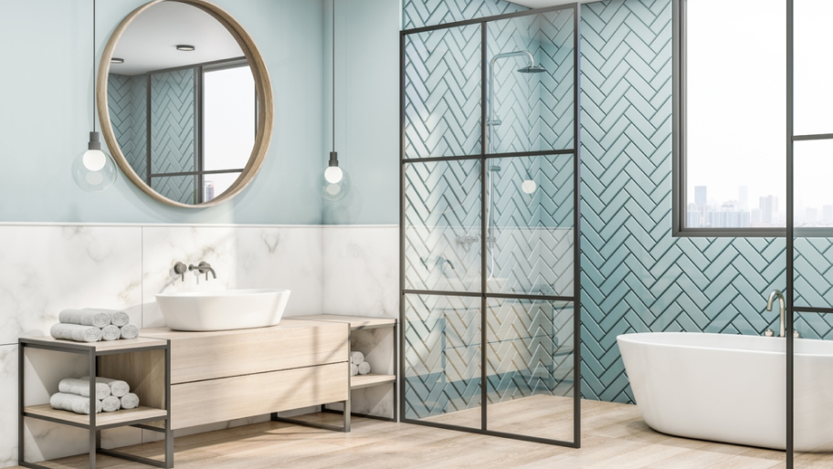

Как выбрать плитку для ванной
Правильно выбранная плитка для ванной способна украсить и визуально расширить даже крошечное помещение. Немаловажную роль в этом играет сочетание фактур, цветов и размеров. О том, какой кафель подойдёт для разных типов помещений и на какие критерии опираться при выборе, рассмотрим в этой статье.
Подбор цвета
Помните, что эффект неправильно выбранного цвета или сочетания оттенков способен испортить все впечатление. Дизайнеры рекомендуют выбрать керамическую плитку следующих цветов:
Настенный кафель призван украшать интерьер и защищать стены от влаги. Хватит первого-второго класса износостойкости. Он тоньше, легче режется и монтируется.
| Тип машины от 1.5 т до 10 т | Время простоя (мин) | Минимальная сумма заказа (₸) |
|---|---|---|
| 1.5 т | 30 | — |
| 3 т | 60 | — |
| Манипулятор 10 т | — | 7 500 |
| 10 т | — | 7 500 |
И если на стены кладётся керамическая плитка, то для пола больше подойдёт керамогранит. По внешнему виду он напоминает кафель, хотя более тяжёлый и прочный. Водопоглощение любой плитки для ванной должно быть не больше 20%.
- Светлая плитка. Белый кафель имеет множество оттенков: слоновая кость, молоко, античный, льняной, снежный. Выигрышно выглядит в большом формате. Визуально расширяет помещение, поэтому его лучше выбирать для маленьких ванных.
- Зелено-голубая гамма — классика для ванных помещений. Умиротворяет, выглядит уместно в любом интерьере.
-
Жёлто-красные насыщенные тона. Выбирайте правильно и применяйте аккуратно, ведь яркие акценты быстро надоедают и утомляют. Лучше использовать отдельными цветовыми зонами.
- Зелено-голубая гамма — классика для ванных помещений. Умиротворяет, выглядит уместно в любом интерьере.
- Керамическая плитка — самый популярный облицовочный материал для ванных комнат, который сочетает лучшие эксплуатационные качества и доступную стоимость.
- Тёмная плитка. Кафель чёрного и шоколадного тона с золотистым орнаментом придаёт интерьеру оттенок роскоши, но в большом количестве может создавать тяжёлое и гнетущее ощущение. Поэтому его используют преимущественно на полу и по нижней части стен ванной комнаты.
Сочетать несколько цветов кафеля нужно правильно. Не увлекайтесь, трёх (максимум пяти) разных оттенков будет достаточно. Также разнообразить однотонную плитку можно орнаментом.
Для стен и пола — есть ли разница?
Выбор плитки зависит от того, на какую плоскость она кладётся. Напольный отделочный материал должен быть прочным, поскольку на него приходится основная нагрузка. Класс износостойкости кафеля для пола должен составлять не меньше трёх единиц, толщина — 7-9 мм.
Настенный кафель призван украшать интерьер и защищать стены от влаги. Хватит первого-второго класса износостойкости. Он тоньше, легче режется и монтируется.
| Тип машины от 1.5 т до 10 т | Время простоя (мин) | Минимальная сумма заказа (₸) |
|---|---|---|
| 1.5 т | 30 | — |
| 3 т | 60 | — |
| Манипулятор 10 т | — | 7 500 |
| 10 т | — | 7 500 |
И если на стены кладётся керамическая плитка, то для пола больше подойдёт керамогранит. По внешнему виду он напоминает кафель, хотя более тяжёлый и прочный. Водопоглощение любой плитки для ванной должно быть не больше 20%.
Материал: как выбрать качественный?
Рассмотрим, наиболее популярные виды сырья, из которого современные производители делают плитку для ванной. У каждого из них свои плюсы и минусы.
Керамика
Керамическая плитка — самый популярный облицовочный материал для ванных комнат, который сочетает лучшие эксплуатационные качества и доступную стоимость.
Керамогранит
Наиболее прочный плиточный материал. Благодаря однородности структуры и устойчивости к температурным воздействиям, керамогранит используется в качестве напольного покрытия. Выдерживает даже женские шпильки. Износостойкость превосходит камень. Чтобы подчеркнуть сходство с этим природным материалом, производители обычно делают плитку шероховатой, что весьма ценно на скользком полу ванной комнаты.
Клинкер
Благодаря плотности клинкерной плитки, она не впитывает влагу, что даёт возможность использовать её для облицовки не только санузлов, но и бассейнов, крылец, фасадов зданий. Из-за особенностей производства окраска клинкера обычно варьируется в пределах терракотово-охристой гаммы. Производители придают клинкерной плитке сходство с кирпичом, деревом или природным камнем.
Форма
Наиболее часто встречаются такие варианты, как:
- квадратная (классический формат; легко монтируется, подходит к любому декору, представлена в широком диапазоне расцветок и текстур);
- прямоугольная (горизонтальная укладка визуально расширяет помещение, а вертикальная — делает потолок выше);
- мозаичная (облицовка стен и полов мелкими элементами требует мастерства и дорого стоит, но придаёт декору особый шарм; мозаика хорошо смотрится только в крупных помещениях);
- мозаичная (облицовка стен и полов мелкими элементами требует мастерства и дорого стоит, но придаёт декору особый шарм; мозаика хорошо смотрится только в крупных помещениях);
- нестандартная (ассиметричная плитка в виде ромбов, чешуи или волн выглядит эффектно, но требует времени и усилий при монтаже, к тому же нестандартные форматы могут быстро утратить актуальность).